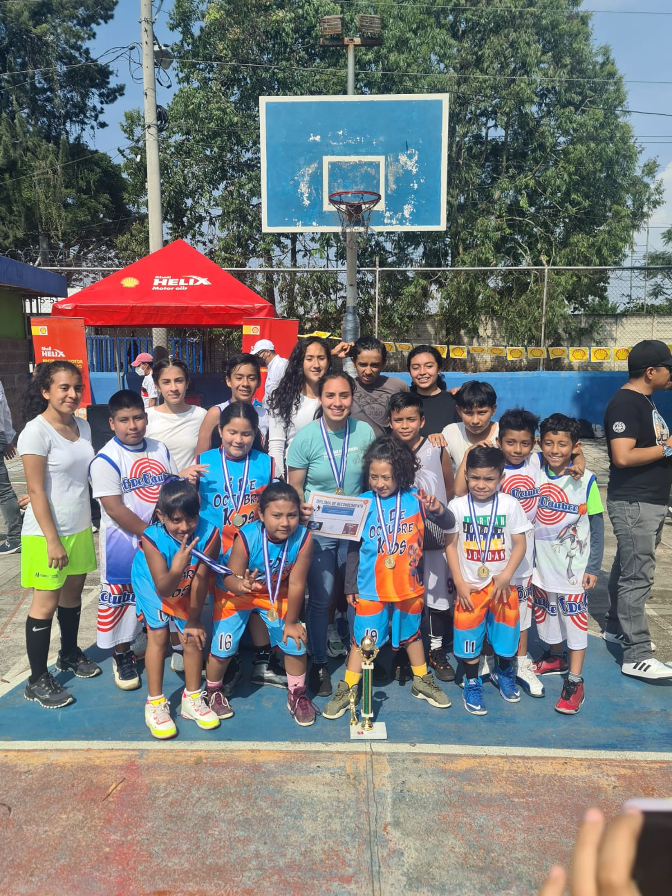
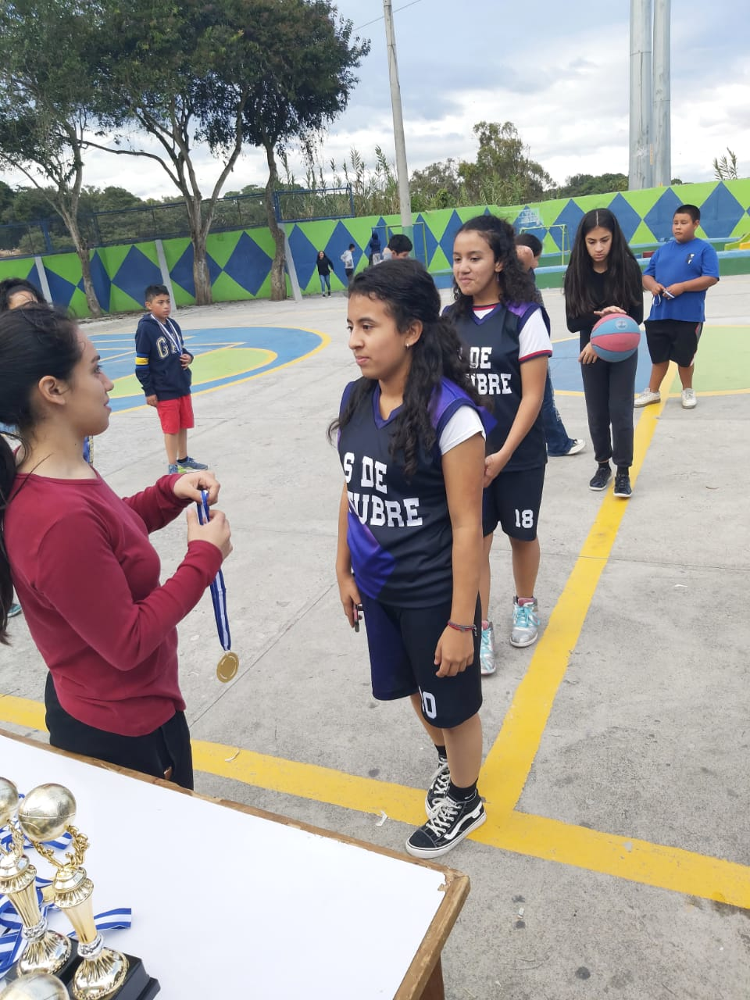
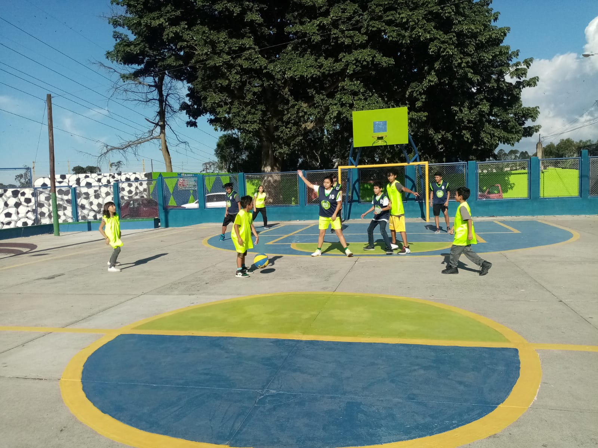
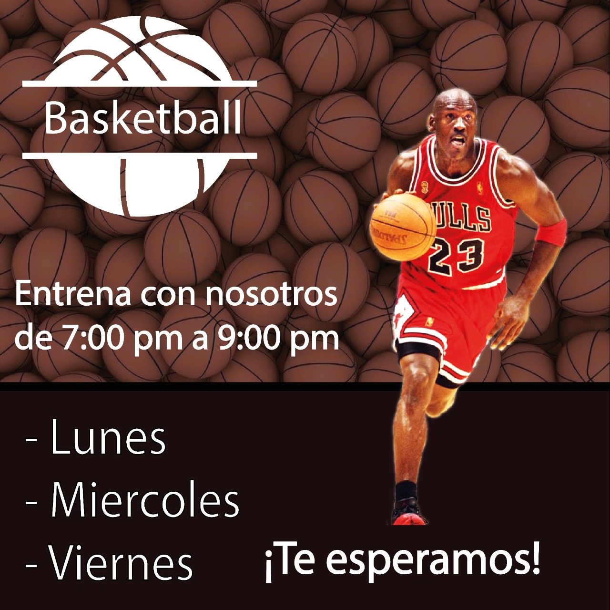

Basket Kids
Basket Kids es un proyecto deportivo enfocado en promover la práctica del baloncesto en niños y niñas, brindándoles un espacio seguro para aprender, divertirse y desarrollar habilidades deportivas. Este proyecto nació gracias a las ganas de enseñar y al deseo de que más niños tuvieran la oportunidad de aprender baloncesto, sin importar su situación económica.
A continuación vemos tres puntos importantes:
Salud Fisica
El baloncesto mejora la condición física, fortalece músculos y ayuda a mantener hábitos saludables

Tabajo en Equipo
Los niños aprenden a convivir, compartir y trabajar juntos para alcanzar objetivos

Disciplina
El deporte enseña responsabilidad, constancia y superación personal
 ¿cómo se juega al Baloncesto?
¿cómo se juega al Baloncesto?
Proyecto Basket Kids
Los entrenamientos comenzaron de forma gratuita con el objetivo de apoyar a la niñez y fomentar valores como el respeto, la disciplina, la responsabilidad y el trabajo en equipo. La única condición para participar era tener interés, compromiso y muchas ganas de aprender. Gracias a esta iniciativa, numerosos niños han podido desarrollar sus capacidades físicas y sociales, además de disfrutar de experiencias deportivas enriquecedoras.



El objetivo principal del proyecto es crear oportunidades para que los niños puedan desarrollarse mediante el deporte, fomentando valores como el respeto, la amistad, la disciplina y el trabajo en equipo.
A través de actividades dinámicas y recreativas, Basket Kids busca motivar a los niños a practicar deporte y alejarse de ambientes negativos, promoviendo una vida sana y activa.


Entrena con nosotros
